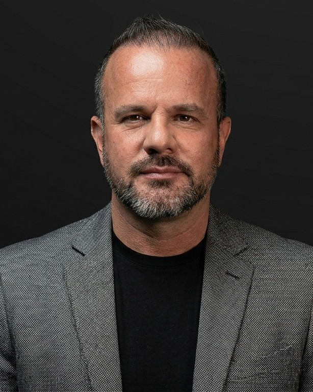

Experiencia de cliente · Relaciones humanas · Entrevistas
Omar Charaf
Más de 20 años diseñando estrategias de Experiencia de Cliente y construyendo relaciones de confianza entre marcas y personas. Además, amplifico esa visión liderando conversaciones con quienes están transformando las empresas de México.

Sobre míRelaciones que se sostienen en el tiempo
Llevo más de 20 años del lado del cliente: escuchando, entendiendo lo que de verdad necesita y convirtiendo esos datos en decisiones que mejoran su experiencia y fortalecen su relación con las marcas.
Me apasionan la empatía, la innovación y la tecnología como herramientas para resolver problemas complejos. Mi enfoque une la comprensión profunda de las personas con el análisis, para lograr relaciones duraderas y resultados medibles.
Esa misma pasión por entender a las personas es la que me llevó a encabezar las entrevistas de Líderes por México: conversaciones en las que saber escuchar vuelve a ser la clave para construir confianza.
TrayectoriaMás de dos décadas de experiencia
CompetenciasLo que aporto a un equipo
Herramientas y plataformas
Formación académicaBases y actualización constante
EntrevistasConversaciones con líderes de México
Cada entrevista es un ejercicio constante de escucha, criterio de negocio y conexión directa con directivos, fundadores y figuras que están construyendo empresas, equipos y comunidades en México. Hasta hoy, estas conversaciones suman 1,969,952 vistas en YouTube.
ContactoConversemos
¿Buscas un líder para transformar la experiencia de tus clientes, impulsar un proyecto estratégico o sumar una voz a Líderes por México? Escríbeme directamente.